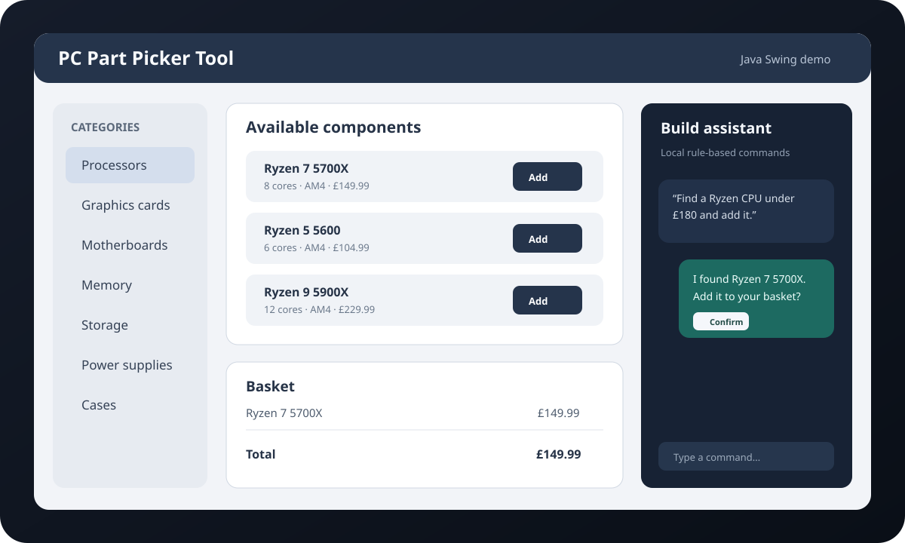

← Back to projects
Java desktop · Team coursework · Database application
PC Part Picker Tool
A Java Swing team project for browsing PC components, managing a basket, reviews and account flows, with a local rule-based assistant layered over a bundled Microsoft Access database.

Representative interface preview
The product
The application brings component browsing, basket functionality, reviews, account history and assistant-driven commands into one self-contained desktop demo. It uses local data and does not depend on a cloud AI service or hosted backend.
My contribution
- Contributed to Java Swing application flows and database-backed features.
- Worked on component browsing, basket and account interactions.
- Contributed to the local assistant integration used to find, add, remove and clear parts through structured commands.
- Worked with UCanAccess / Jackcess to query and update the bundled Microsoft Access data.
- Helped keep mutating assistant actions behind explicit user confirmation.
Architecture
Java Swing UI
↓
Application flow + local assistant
↙ ↓ ↘
Browse Basket Reviews
↓
DatabaseAccess
↓
Microsoft Access
Engineering focus
This additional project demonstrates teamwork, data-driven desktop UI development, database access and an early experiment with natural-language-style commands while keeping the demo deterministic and local.